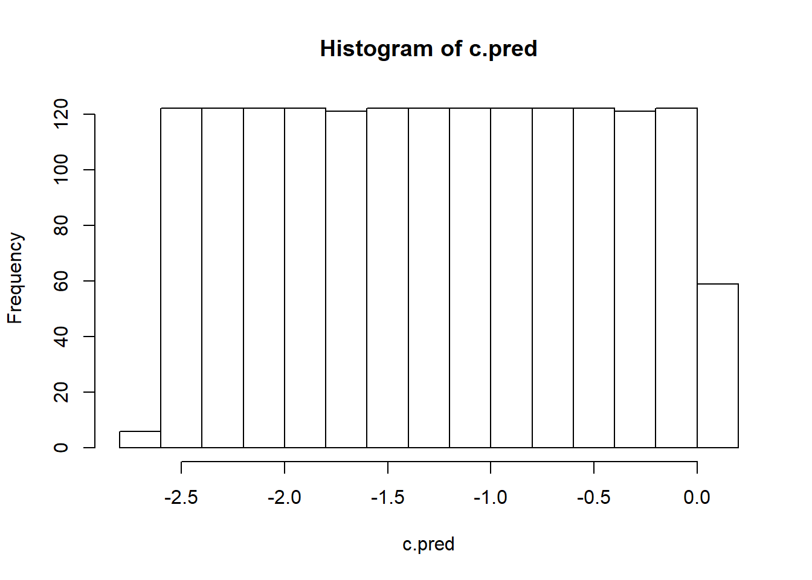
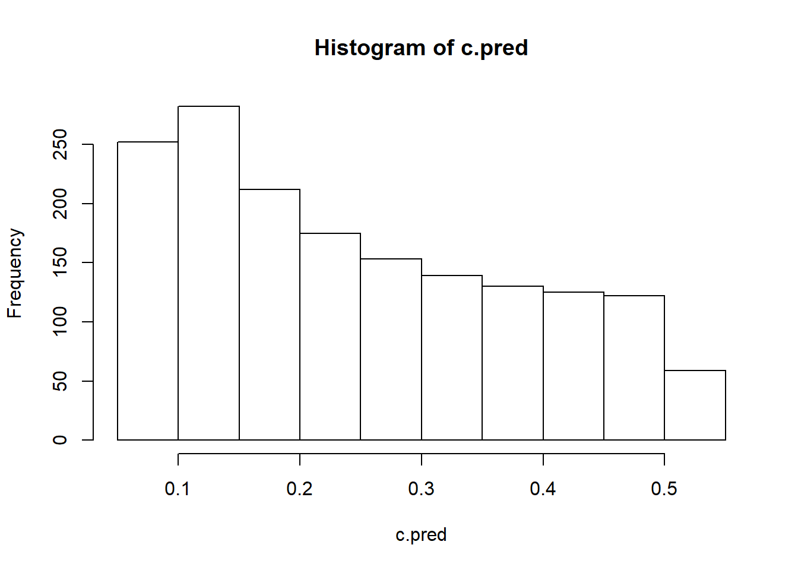
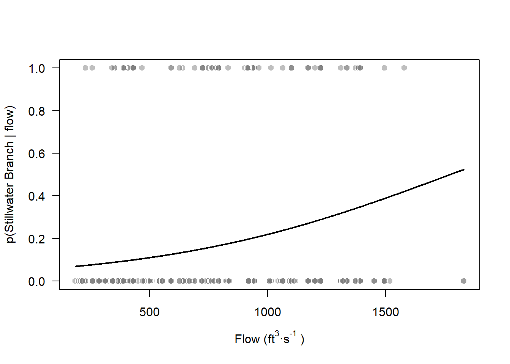
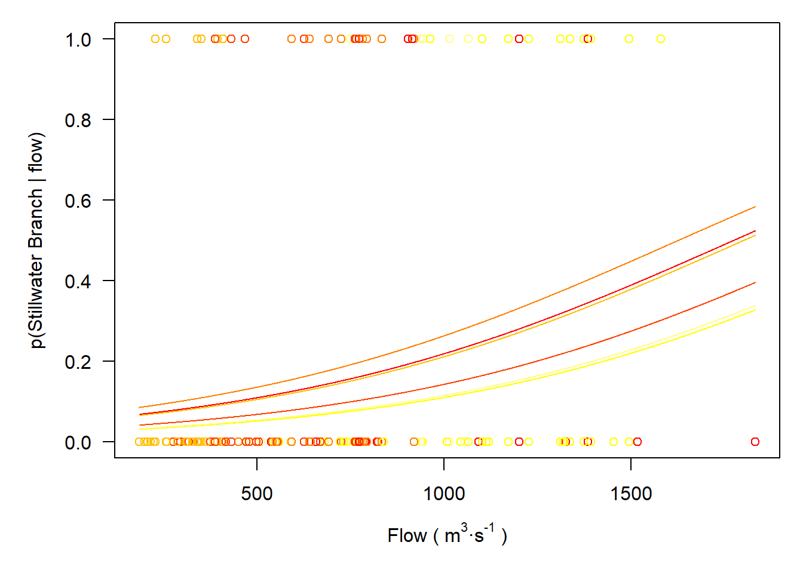
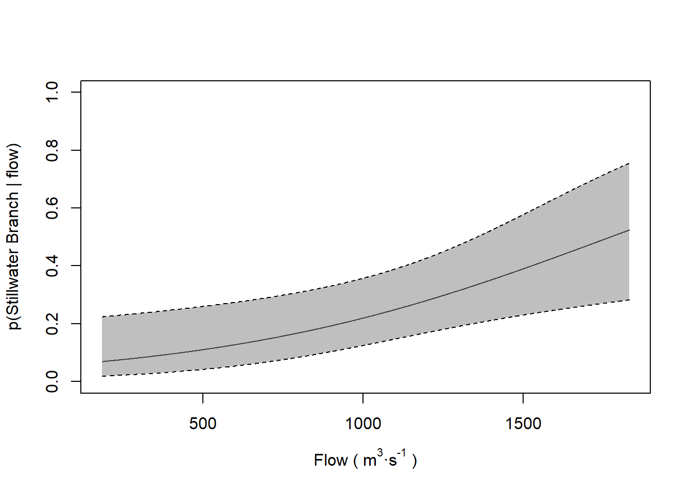

Generalized linear models: logistic regression

Introduction
This week we will start to dive into the world of generalized linear models and their implementation and interpretation in R. Before we can do that, we will talk about why we might like to use these methods, and the fact that the GLM actually represents a broad class of models that are highly flexible and incredibly useful. By the end of this week, we want you to be thinking of this as a kind of “go-to” tool for modeling complex, real-world data. Then, we will continue to layer complexity on this framework to extend it further over the next couple of weeks before we leave linearized modeling behind for a while.
Assumptions of linear models
Wait, what? I thought we were talking about GLMs this week? We are. The first thing you need to know is that linear models are just a special case of the GLM. That is, the linear model assumes a certain error distribution (the normal) that helps things work smoothly and correctly. The next few weeks of class are all about relaxing the assumptions of linear models so we can actually use them in the real world.
Let’s take another look at the assumptions of linear models:
Here are the basic assumptions that we explicitly make when we use linear models, just in case you’ve forgotten them:
- Residuals are normally distributed with a mean of zero
- Independence of observations (residuals)
- Colinearity
- Auto correlation of errors (e.g., spatial & temporal)
- Homoscedasticity
- Linear relationship between X and Y
Assumption 1: normality of residuals
We’ve seen these before, but let’s recap. For assumption 1, we are assuming a couple of implicit things: 1. The variable is continuous (it must be if it’s error structure is normal), and 2. The error in our model is normally distributed. In reality, this is probably the least important assumption of linear models, and really only matters if we are trying to make predictions from the models that we make. Of course, we are often concerned with making predictions from the models that we make, so we can see why this might be important. However, more often we are in extreme violation of this assumption in some combination with assumption 4 above to such a degree that it actually does matter. For example, a response variable that is binomial (1 or zero) or multinomial in nature cannot possibly have normally distributed errors with respect to x unless there is absolutely no relationship between X and Y, right? So, if we wanted to predict the probability of patients dying from some medical treatment, or the presence/absence of species across a landscape then we can’t use linear models.
Assumption 2: independence of observations
This time we’ve broken the assumption 2 into two components: colinearity and autocorrelation of errors. Remember that the manifestation of these problems is in the precision of our coefficient estimates, and this has the potential to change the Type-I/II error rates in our models, causing us to draw false conclusions about which variables are important. As we discussed earlier in the course we expect to see some colinearity between observations, and we can deal with balancing this in our modeling through the use of model selection techniques to reduce Type-I and Type-II error. In the next couple of weeks, we will examine tools that will help us determine whether or not colinearity is actually causing problems in our models that go beyond minor nuisances. As for the second part, autocorrelation, we can actually use formulations of the GLM that use ‘generalized least squares’ to include auto-regressive correlation matrices in our analysis that will allow us to relax this assumption of linear models and improve the precision of our parameter estimates.
Assumption 3: homoscedasticity
Previously, we looked at ways to reduce this issue by introducing blocking (categorical) variables to our models. During the coming weeks, we will look at models that allow us to relax this assumption further through the use of weighted least squares and random effects, which can be applied to a wide range of regression methods from linear models to GLMs and GLMMs
Assumption 4: linearity and additivity
We’ve already looked at a couple of ways to deal with violations of these two assumptions such as data transformation and/or polynomial formulations of the linear model. We will continue to apply these concepts during the next several weeks.
Introducing the GLM
There are a number of situations that should just scream “GLM!!!” at you. The majority of these are easy to identify because you will know right away that the response variable in which you are interested is clearly not a continuous or normally distributed variable. This is the number one reason for moving into the GLM framework for most people.
The standard GLM consists of three major components:
- A random variable (Y) that is our response of interest,
- Linear predictor(s) of Y, called X, and
- A invertible “link function” that projects the expectation of Y onto some space based on assumptions about the distributional family of Y.
The first two components are familiar to us. They are the exact same basic components of any regression formula that takes the following form:
\(Y_{i,j} = \beta_0 + \beta_j \cdot X_{i,j}\),
or
\(Y = mX + b\),
if you prefer
So, this much should be familiar. The major change from the linear models with which we have been working is the addition of this invertible link function, and it is the component from which the GLM inherits its name. The link function is just a way for us to put the expectation of the response within the context of an asymptotically normal distribution so that we can relax the assumptions of the linear model to accomodate new data types. In essence, it is very similar to the kinds of transformations that we talked about earlier in the semester, but is used during estimation rather than before hand.
To solve for the coefficients (betas) of a GLM, we move fully into the realm of maximum likelihood, with which you are all undoubtedly still familiar (lecture module 3: Probability Distributions). A given link function is used for the corresponding distribution that we assume for our data set, and a likelihood for that distribution can be defined such that we can calculate the likelihood of the data given our parameter estimates in a manner similar to the method we used for the standard normal distribution earlier this semester. Within this framework, we input different values (or guesses) about the parameter values that maximize the likelihood of our data one step at a time. Once the change in likelihood becomes sufficiently small, we accept that the algorithm has ‘converged’ on the optimal estimates for our model parameters (our \(\beta_{i,j}\)), and the algorithm stops. You do not need to be able to do this by hand (thank goodness for R!), but you do need to understand what is going on so you can troubleshoot when R says that the model failed to converge…
Let’s take a look at a few variable types that we might consider to be common applications for GLM in biology and ecology. We will cover each of these below in detail, here is a list so you know what is coming:
- Binary response
- Count data (Poisson)
- Overdispersed count data (negative binomial)
Binary (logistic) regression
Logistic regression generally is reserved for the case in which we have a binary response that, by definition, can take on values of 1 or 0. These values can be expressed as outcoms of individual trials (Bernoulli) or as outcomes of some number of trials (Binomial- last week). These data types are common in biological and ecological data analyses, and thus it is important that you understand how to analyze these data when you encounter them- linear models will not accommodate this data type. The easiest way to look at what is going on is to use a worked example.
Let’s read in another smolt data set that we have not yet played with (it’s the last fish data set for the course, so soak it all up!).
Look at the first few rows of data:
head(choice)
path year hatchery length mass date flow
1 0 2010 1 176 57 118 345
2 0 2005 1 205 101 128 1093
3 0 2010 1 180 56 118 345
4 0 2010 1 193 74 118 345
5 0 2005 1 189 76 128 1093
6 0 2010 1 180 65 118 345Data Explanation
These data are from a study that examined factors affecting path choice by wild and hatchery-reared endangered Atlantic salmon smolts during seaward migration in the Penobscot River, Maine. State, local, and federal fishery managers were interested in understanding what factors affected migratory routing through the lower river because there were different numbers of dams, with different estimated smolt mortality rates, on either side of a large island hydropower project in this system. If managers could understand factors influencing migratory route, they might be able to manipulate flows, stocking dates, and dam operation to improve survival of these endangered fish. Furthermore, the results of the study were used to predict the effects of dam removal, and hydropower re-allocation in the lower river on population-level consequences for these fish. These data were part of a larger analysis:
Stich, D. S., M. M. Bailey, and J. D. Zydlewski. 2014. Survival of Atlantic salmon (Salmo salar) smolts through a hydropower complex. Journal of Fish Biology 85:1074-1096.
The data consist of the following variables:
path: The migratory route used by individual fish. The choices were main-stem of the river (0) or the Stillwater Branch (1) around the island.
year: The year in which individual fish were tagged and relocated using acoustic telemetry.
hatchery: An indicator describing if fish were reared in the wild (0) or in the federal conservation hatchery (1)
length: Fish length (in mm)
mass: Fish mass (in grams)
date: Ordinal date on which the fish entered the hydrocomplex determined from time-stamps on acoustic receivers
flow: Discharge recorded at the USGS gauge in the headpond of the dam several kilometers upstream of the hydropower complex.
NOTE: the results of this analysis won’t look like the results from the paper just yet. We will talk about why in a couple of weeks when we introduce generalized linear mixed models.
Data analysis
We are going to use the 1/0 binary data to estimate the effects of a number of covariates of interest on the probability that an individual fish used the Stillwater Branch for migration in each year of this study using logistic regression.
In order to do this, we will use the ‘logit’ link function, which can be defined as:
The inverse of the logit function is:
Since we are interested in the fixed effects of year, and not the linear trend through time, we need to convert year to factor.
Now, if we want to test hypotheses about the influences of explanatory variables on the probability of using the Stillwater Branch, we could make models to represent those hypotheses. For example, if we wanted to test whether flow had a significant influence on path across years, then we could build a model that looks like this:
This is the GLM analogue to ANCOVA.
We could make another model that investigates effects of length instead of flow:
Or a model that includes both:
We could look at these individually to determine variable-level significance using p-values, or compare them as competing explanations using Akaike information criterion that we discussed last week.
AIC(flow.mod, len.mod, flow.len.mod)
df AIC
flow.mod 7 565.0131
len.mod 7 570.6512
flow.len.mod 8 565.7209But, we can also streamline this to get other information about the models. To do this:
First, define a set of models based on a priori combinations of explanatory variables.
# Make an empty list to hold the models
mods=list()
# Now, add models to the list.
mods[[1]]=glm(path~year+hatchery+length+flow,family=binomial, data=choice)
mods[[2]]=glm(path~year+flow,family=binomial, data=choice)
mods[[3]]=glm(path~year+hatchery,family=binomial, data=choice)
mods[[4]]=glm(path~year+length,family=binomial, data=choice)
mods[[5]]=glm(path~year+length+hatchery,family=binomial, data=choice)
mods[[6]]=glm(path~year+length+flow,family=binomial, data=choice)
mods[[7]]=glm(path~year+hatchery+flow,family=binomial, data=choice)Next, give the models some names using the formulas for each of the models. Remember: models are stored as list objects in R, and each of those list objects (models) has names. We can reference those names using the $ notation:
# Assign the formula for each of the models as the name
for(i in 1: length(mods)){
names(mods)[i] = as.character(mods[[i]]$call$formula)[3]
}Now, we use the AICcmodavg package to make a model selection table:
Interpreting the results
This pretty much proceeds the same way for GLM as it does for linear models until we get to making predictions of the response based on our best model.
Our model selection table is an object in R (right?), and we can reference that object using $ notation, matrix notation [ , ], or by calling rownames to get the index for each of the models. Let’s use this approach to get the best model from our candidate set. Here is a worked example in the code that follows:
# Print the table
table
Model selection based on AICc:
K AICc Delta_AICc AICcWt Cum.Wt LL
year + flow 7 565.16 0.00 0.31 0.31 -275.51
year + hatchery + flow 8 565.23 0.07 0.30 0.61 -274.52
year + length + flow 8 565.91 0.75 0.21 0.82 -274.86
year + hatchery + length + flow 9 567.12 1.96 0.12 0.93 -274.44
year + hatchery 7 569.50 4.34 0.04 0.97 -277.68
year + length 7 570.80 5.64 0.02 0.99 -278.33
year + length + hatchery 8 571.37 6.21 0.01 1.00 -277.59# Look at the structure just to show that it is, indeed, an object:
str(table)
Classes 'aictab' and 'data.frame': 7 obs. of 8 variables:
$ Modnames : Factor w/ 7 levels "year + flow",..: 1 3 6 4 2 5 7
$ K : num 7 8 8 9 7 7 8
$ AICc : num 565 565 566 567 570 ...
$ Delta_AICc: num 0 0.0674 0.7506 1.9557 4.3408 ...
$ ModelLik : num 1 0.967 0.687 0.376 0.114 ...
$ AICcWt : num 0.3078 0.2976 0.2115 0.1158 0.0351 ...
$ LL : num -276 -275 -275 -274 -278 ...
$ Cum.Wt : num 0.308 0.605 0.817 0.933 0.968 ...Look at the rownames of the table. These rownames are the index for each of our models as they appear in the mods object, and we can use the index to reference objects inside of the mods list…
This tells us that the rowname for the best model (the one at the top of the table) is 2. That means that our best model is stored in position 2 of our model list that we named ‘mods’. Let’s double check it to make sure:
mods[[2]]
Call: glm(formula = path ~ year + flow, family = binomial, data = choice)
Coefficients:
(Intercept) year2006 year2009 year2010 year2011 year2012 flow
-2.911624 -0.518632 0.243194 -0.043979 -0.814334 -0.764289 0.001642
Degrees of Freedom: 758 Total (i.e. Null); 752 Residual
Null Deviance: 580.2
Residual Deviance: 551 AIC: 565This looks pretty darn good! We could also do a summary of the model to get the coefficient estimates and the significance codes for the estimated coefficients:
summary(mods[[2]])
Call:
glm(formula = path ~ year + flow, family = binomial, data = choice)
Deviance Residuals:
Min 1Q Median 3Q Max
-1.2183 -0.5757 -0.4401 -0.3564 2.4577
Coefficients:
Estimate Std. Error z value Pr(>|z|)
(Intercept) -2.9116243 0.7981931 -3.648 0.000265 ***
year2006 -0.5186319 0.6237029 -0.832 0.405671
year2009 0.2431939 0.4615202 0.527 0.598235
year2010 -0.0439789 0.6525993 -0.067 0.946271
year2011 -0.8143343 0.4029438 -2.021 0.043284 *
year2012 -0.7642890 0.5137641 -1.488 0.136849
flow 0.0016416 0.0006195 2.650 0.008052 **
---
Signif. codes: 0 '***' 0.001 '**' 0.01 '*' 0.05 '.' 0.1 ' ' 1
(Dispersion parameter for binomial family taken to be 1)
Null deviance: 580.15 on 758 degrees of freedom
Residual deviance: 551.01 on 752 degrees of freedom
AIC: 565.01
Number of Fisher Scoring iterations: 5Cool!! But, what if we wanted the script to always grab the summary of the top model in our model selection table no matter what the rowname was? Well, in that case, we could do this:
summary( mods[[ as.numeric(rownames(table[1, ])) ]] )
Call:
glm(formula = path ~ year + flow, family = binomial, data = choice)
Deviance Residuals:
Min 1Q Median 3Q Max
-1.2183 -0.5757 -0.4401 -0.3564 2.4577
Coefficients:
Estimate Std. Error z value Pr(>|z|)
(Intercept) -2.9116243 0.7981931 -3.648 0.000265 ***
year2006 -0.5186319 0.6237029 -0.832 0.405671
year2009 0.2431939 0.4615202 0.527 0.598235
year2010 -0.0439789 0.6525993 -0.067 0.946271
year2011 -0.8143343 0.4029438 -2.021 0.043284 *
year2012 -0.7642890 0.5137641 -1.488 0.136849
flow 0.0016416 0.0006195 2.650 0.008052 **
---
Signif. codes: 0 '***' 0.001 '**' 0.01 '*' 0.05 '.' 0.1 ' ' 1
(Dispersion parameter for binomial family taken to be 1)
Null deviance: 580.15 on 758 degrees of freedom
Residual deviance: 551.01 on 752 degrees of freedom
AIC: 565.01
Number of Fisher Scoring iterations: 5Here we are asking for the rowname of the first row in our model selection table. We have to convert that to a number from a character string to reference the index in the mods list, and then we can summarize the best model. Another way to do this is:
# First, get the number corresponding to the list index for the best
# model in the candidate set
best = as.numeric( rownames(table[1, ]) )
# Now, get the summary for the model in mods that was the best
summary( mods[[best]] )
Call:
glm(formula = path ~ year + flow, family = binomial, data = choice)
Deviance Residuals:
Min 1Q Median 3Q Max
-1.2183 -0.5757 -0.4401 -0.3564 2.4577
Coefficients:
Estimate Std. Error z value Pr(>|z|)
(Intercept) -2.9116243 0.7981931 -3.648 0.000265 ***
year2006 -0.5186319 0.6237029 -0.832 0.405671
year2009 0.2431939 0.4615202 0.527 0.598235
year2010 -0.0439789 0.6525993 -0.067 0.946271
year2011 -0.8143343 0.4029438 -2.021 0.043284 *
year2012 -0.7642890 0.5137641 -1.488 0.136849
flow 0.0016416 0.0006195 2.650 0.008052 **
---
Signif. codes: 0 '***' 0.001 '**' 0.01 '*' 0.05 '.' 0.1 ' ' 1
(Dispersion parameter for binomial family taken to be 1)
Null deviance: 580.15 on 758 degrees of freedom
Residual deviance: 551.01 on 752 degrees of freedom
AIC: 565.01
Number of Fisher Scoring iterations: 5Since this is really the same thing as ANCOVA we can use the Anova() function from the car package to get an ANCOVA summary for the model to look at significance of our main effects:
library(car)
Anova(mods[[best]], Type='III')
Analysis of Deviance Table (Type II tests)
Response: path
LR Chisq Df Pr(>Chisq)
year 12.8043 5 0.025283 *
flow 7.4471 1 0.006354 **
---
Signif. codes: 0 '***' 0.001 '**' 0.01 '*' 0.05 '.' 0.1 ' ' 1Here, we see that there are signigicant effects of both year and flow on our response, path choice.
Making predictions about the effect of x on y.
The first thing to remember here is that we have used a link function to estimate this model, so we cannot use the same method as before to make predictions about our response from the model coefficients.
The second thing to remember here is that by definition we have used an invertible link function to estimate this model so the previous statement is a lie and we actually can use the same method as before to make predictions about our response from the model coefficients. We just need to add an extra step so that we can invert our predictions about the expected value of Y with respect to X.
Confused? Yeah, it’s a little confusing. An example always goes a long way…
Let’s start by grabbing the summary for our best model.
Now we can look at the coefficient estimates.
c.res
Estimate Std..Error z.value Pr...z..
(Intercept) -2.911624325 0.7981931477 -3.64776913 0.0002645272
year2006 -0.518631856 0.6237029032 -0.83153670 0.4056705026
year2009 0.243193850 0.4615202282 0.52694083 0.5982346820
year2010 -0.043978930 0.6525992875 -0.06739041 0.9462709073
year2011 -0.814334317 0.4029437518 -2.02096276 0.0432836201
year2012 -0.764288967 0.5137640800 -1.48762632 0.1368494687
flow 0.001641583 0.0006194926 2.64988401 0.0080519409Then, we can make some predictions. First, let’s just look at the effect of flow. We will do this “by hand” the first time.
# Make a new sequence of flow along
# which we will make our predictions
newFlow = seq(from = min(choice$flow),
to = max(choice$flow),
by = 1)
# Now make predictions for the year 2005 using flow:
c.pred = c.res[1, 1] + c.res[7, 1]*newFlow
# Let's look at these predictions:
hist(c.pred)
Well, this does not look very informative does it? And, actually, it should not. What we should take away from this is that these cannot possibly be predictions about the probability of using the Stillwater Branch because there are numbers that are less than zero! Why is this? It is because we need to transform these estimates back on to the probability scale from the logit scale on which we are working. We will use the invlogit() function that we defined above to put these estimates back on the probability scale.
# Invert the logit on our predictions
c.pred = invlogit(c.pred)
# Now, let's take a look:
hist(c.pred)
You can see that, in general, there is a relatively low probability of an individual fish using the Stillwater branch. You’ll also note that this distribution is right skewed now that it is back on the probability scale. This is one of the super-useful things that the link function takes care of for us during estimation. Now let’s make a figure that shows how the probability of using the Stillwater Brance changes with flow:
# Make plot with gross units for x-axis
plot(x=choice$flow, y=choice$path,
pch = 21, bg=rgb(.5,.5,.5,.5), col='white', cex=1.25,
xlab= expression(paste('Flow (','ft'^'3','\u00b7','s'^'-1',' )')),
ylab = "p(Stillwater Branch | flow)",
yaxt='n')
lines(x=newFlow, y=c.pred, type='l', lwd = 2, yaxt='n')
axis(2, las=2)
Now, you can see that there is an increasing probability of using the Stillwater Branch with increasing flow, even if it isn’t obvious in the raw data. Looking at the plot of the raw data, you can see 1) why we need models to look at trends like these, and 2) why it is so important to provide visual aids to assist with the interpretation of your results.
If we wanted to, we could go on to make predictions like we did with linear models, one for each year with respect to flow, or we could use our fitted data to show trends. We could do this either using the method I have just demonstrated, or…
We could do this using the predict function in R like we did with linear models!
Example: predict effect of flow on mean probability of using Stillwater Branch by year from our best model.
# Create new flow data:
flow = seq(from=min(choice$flow), to=max(choice$flow), by=1)
# Create new data for years:
year = sort( rep(unique(choice$year), length(newFlow)) )
# Now repeat the flow vector for each year
flow=rep(flow, length(unique(year)))
# Smoosh them together into a dataframe for prediction
newD = data.frame(flow, year)
# Make predictions: WE DON'T NEED TO INVERT THE PREDICTIONS FROM THE
# PREDICT.GLM FUNCTION IF WE SPECIFY " type = 'response' "
predicted = predict(object = mods[[best]],
newdata = newD,
type='response')Now, plot the predictions by year:
# Add the raw data
par(mar=c(5,5,1,1))
plot(x=choice$flow,
y=choice$path,
xlab= expression(paste('Flow ( ','m'^'3','\u00b7','s'^'-1',' )')),
ylab = "p(Stillwater Branch | flow)",
yaxt='n',
pch=21,
col= heat.colors(length(unique(choice$year)))[choice$year]
)
axis(2, las=2)
# Then we could use a loop to go through each year and plot
# the predictions:
for(i in 1:length(unique(year))){
lines(x = flow[year==unique(year)[i]],
y = predicted[year==unique(year)[i]],
col= heat.colors(length(unique(year)))[i]
)
}
Wow, that is so much uglier than I could have imagined.
Alternatively, we could plot these one year at a time so we can show the uncertainty in our estimates, like this:
# Make predictions from the model and the new data defined above,
# this time specifying that we would also like to get standard
# errors for our estimates (se.fit = TRUE)
predicted = predict(object = mods[[best]],
newdata = newD,
type='link',
se.fit = TRUE) The resulting object is a list. Our prediction (fit) and the SE for those predictions are in the first and second elements of that list. We can turn them into a dataframe like this:
preds = data.frame(predicted[1:2])
# Then, using our dataframe, we can calculate Wald 95%
# confidence intervals around our predictions by multiplying
# by the critical values for our quantiles and we store them
# in new columns in our dataframe
preds$lwr = preds$fit + qnorm(0.025)*preds$se.fit
preds$upr = preds$fit + qnorm(0.975)*preds$se.fit
# We just need to convert these to the probability scale now
# using our invlogit function that we defined above
preds[ , c(1,3,4)] <- apply(X=preds[ , c(1,3,4)],
MARGIN=2,
FUN=invlogit)
# We can combine this dataframe with our newD dataframe:
preds = data.frame(newD, preds)
# Now, we make predictions for a specific year of interest
pred05 <- preds[1:nrow(preds[preds$year==2005, ]) , ]
plot(x=pred05$flow[pred05$year==2005],
y=pred05[,3], type='l',
lty=1, col='black', ylim=c(0,1),
xlab= expression(paste('Flow ( ','m'^'3','\u00b7','s'^'-1',' )')),
ylab = "p(Stillwater Branch | flow)"
)
polygon(x=c(pred05$flow[pred05$year==2005],
rev(pred05$flow[pred05$year==2005])),
y=c(pred05[,5], rev(pred05[,6])),
col = rgb(0.5,0.5,0.5,0.5),
border = NA
)
lines(x=pred05$flow[pred05$year==2005], y=pred05[,5],
type='l', lty=2, col='black')
lines(x=pred05$flow[pred05$year==2005], y=pred05[,6],
type='l', lty=2, col='black')
This work is licensed under a Creative Commons Attribution 4.0 International License. Data are provided for educational purposes only unless otherwise noted.